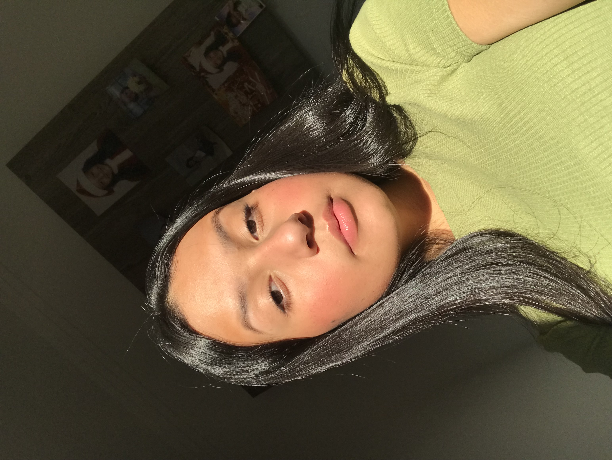

Me chamo Julia Farias de Queiroz, tenho 16 anos. Estou no segundo ano de ensino médio, no Centro Educacional SESI 123, em Sorocaba. Estou fazendo SENAI na área de Desenvolvimento de Sistemas. Nesse portifólio vou apresentar alguns projetos de minha realização durante essa primeira etapa do SENAI.
Nesse projeto eu criei uma lista das minhas Top 5 Músicas.
Nesse projeto eu fiz um site com informações do Dia internacional das mulheres.
Nesse projeto eu realizei um compilado de capitais e de uma cidade que eu gosto muito, e adicionei as informações.